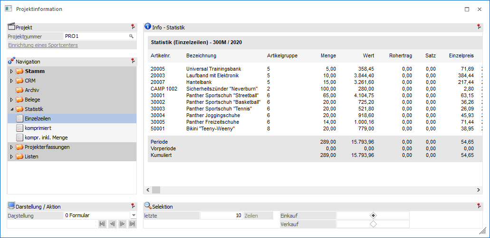
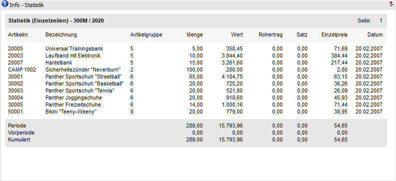
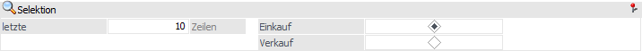
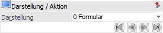

Projektinformation - Bereich "Statistik" - Ansicht "Einzelzeilen"
In der Ansicht "Einzelzeilen" werden die einzelnen Statistikzeilen des Artikels ausgegeben.

Die Ansicht "Einzelzeilen" besteht aus den folgenden Info-Elementen:
ü Info - Statistik
ü Selektion
ü Darstellung / Aktion
Info - Statistik

An dieser Stelle werden die Statistikzeilen, gemäß der nachfolgenden Selektion, dargestellt. Die Art der Anzeige kann mit Hilfe der Option "Darstellung" gewählt werden.
Selektion

In diesem Bereich kann definiert werden, welche bzw. wie viele Statistikzeilen dargestellt werden sollen. Die gewählten Einstellungen werden benutzerspezifisch gespeichert.
Ø letzte x Zeilen
An dieser Stelle kann definiert werden, wie viele Statistikzeilen maximal angezeigt werden sollen.
Ø Einkauf / Verkauf
Durch diese Einstellung kann definiert werden, ob Statistikzeilen aus dem Einkaufs- oder Verkaufsbereich ausgewertet werden sollen.
Darstellung / Aktion

Ø Darstellung
An dieser Stelle kann mit Hilfe einer Auswahlliste gewählt werden, ob die Darstellung der Statistik in Form eines Formulars oder einer Tabelle erfolgen soll.
Ø  VCR-Buttons
VCR-Buttons
Sollte die Anzeige über mehrere Seiten dargestellt werden, dann kann mit Hilfe der VCR-Buttons zwischen den einzelnen Seiten gewechselt werden.